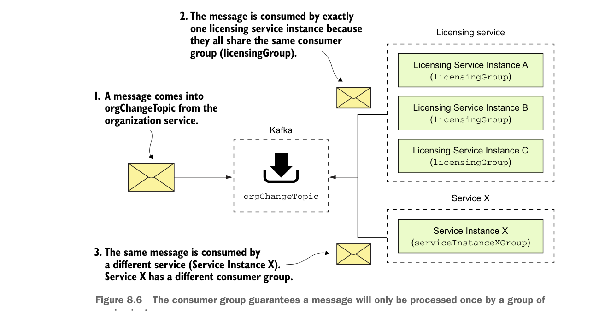

property called spring.cloud.stream.bindings.input.group. The group property defines the name of the consumer group that will be consuming the message.
The concept of a consumer group is this: You might have multiple services with each service having multiple instances listening to the same message queue. You want each unique service to process a copy of a message, but you only want one service instance within a group of service instances to consume and process a message. The group property identifies the consumer group that the service belongs to. As long as all the service instances have the same group name, Spring Cloud Stream and the underlying message broker will guarantee that only one copy of the message will be consumed by a service instance belonging to that group. In the case of your licensing service, the group property value will be called licensingGroup.
Figure 8.6 illustrates how the consumer group is used to help enforce consume-once semantics for a message being consumed across multiple services.

The consumer group guarantees a message will only be processed once by a group of service instances.
8.3.3 Seeing the message service in action
At this point you have the organization service publishing a message to the orgChangeTopic every time a record is added, updated, or deleted and the licensing service receiving the message of the same topic. Now you’ll see this code in action by updating an organization service record and watching the console to see the corresponding log message appear from the licensing service.